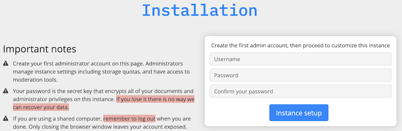
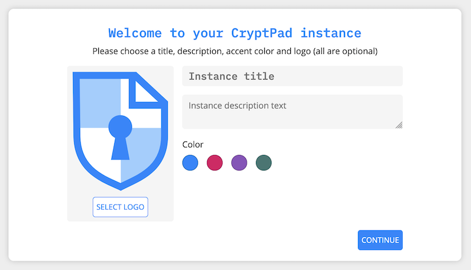
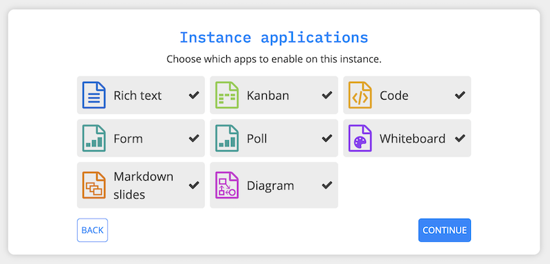
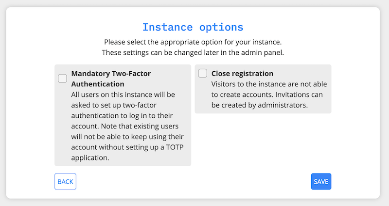

Installation#
This guide is about installing a public CryptPad instance available on the internet. For instructions about installing and running a local development instance please see the Developer Guide.
Prerequisites#
Domains#
2 domains or subdomains are needed to take full advantage of CryptPad’s security features. Please see the domains section below for more details.
Hardware#
The development team uses and recommends the following hardware requirements as a minimum on the host machine:
Debian 12
2GB RAM
2 CPUs
20GB storage (depending on planned usage)
Предупреждение
CryptPad is engineered to maximise privacy, and to minimize the amount of useful information that can be gained even if the host machine is compromised. However it is up to the administrator(s) to ensure that the host machine is secure. The instructions for this are beyond the scope of this guide but best practices include:
Disabling password-based SSH access
Updating the operating system regularly with any security patches
Limiting the number of people who have server access
Avoiding insecure applications running in parallel on the same host
Updating CryptPad itself regularly
Software#
Before starting the installation, ensure the following software is installed:
Git
Node.js with NPM included (we use the Active LTS version branch)
Using NVM is recommended
Docker engine (if using Docker, see Install with Docker)
Install Cryptpad#
Recommended#
Примечание
The development team recommends creating a dedicated user to install and run CryptPad in production rather than using the root user.
Clone the CryptPad repository
git clone -b 2025.12.0 --depth 1 https://github.com/cryptpad/cryptpad.git cryptpad
Move to the newly cloned repository
cd cryptpad
Switch to the latest published tag
git checkout 2025.12.0
Dependencies#
npm ci
npm run install:components
OnlyOffice (optional)#
OnlyOffice applications (Spreadsheet, Document, and Presentation) are not bundled with CryptPad anymore. You can install/update OnlyOffice by running the installation script provided:
./install-onlyoffice.sh
If you can not or do not want to use this script, it is also possible to install OnlyOffice manually.
Configuration#
Copy the example configuration
cp config/config.example.js config/config.js
Please read the configuration file, and modify variables as needed. The domains are particularly important.
As part of the installation process, be sure to read Instance customization and to modify customize/application_config.js as some settings cannot be changed once user accounts have been created.
The server can now be started with
node server
You will get as result an installation URL with a unique token for setting up your instance.
Примечание
Don't use it just yet. Note it down, you'll need it later at the Setup your instance
The instance is now ready to run but cannot yet be accessed from the internet.
Regarding storage, data retention is set by default to:
90 days for documents not "pinned" by any registered user
15 days for deleted data that is first archived prior to final deletion
365 days for inactive accounts
You can also setup a dedicated cron job to run the scripts/evict-inactive.js script. Its purpose is to move all the users destroyed & inactive (according to the inactiveTime setttings) files to the archive directory.
Примечание
Note that you'll need to set disableIntegratedEviction to true in that case.
Use the crontab -e command to set up a cron job, happening twice a month, starting on the first and 15th at 01h30:
30 1 1,15 * * (cd cryptpad; node scripts/evict-inactive.js > /dev/null)
Then you'll likely want to do the same for scripts/evict-archived.js. Which will clean the archive directory by permanently remove files that have been archived for more than archiveRetentionTime days.
Again, use the crontab -e command to set up a another cron job, starting on the 7th and 22th at 01h30:
30 1 7,22 * * (cd cryptpad; node scripts/evict-archived.js > /dev/null)
Daemonization#
In production you may want to run CryptPad as a daemon that restarts automatically.
Systemd#
To run CryptPad as a systemd service, please follow the example cryptpad.service file.
Save the example as
cryptpad.servicein/etc/systemd/system/Make necessary adjustments (e.g. user name, path, nodejs version)
Enable the service at startup with
systemctl enable cryptpad.
Other ways of daemonizing nodejs applications include for example foreverjs or pm2.
FreeBSD#
To run CryptPad as a rc.d unit, please follow the example rc.d-cryptpad file.
Save the example as
cryptpadin/usr/local/etc/rc.d/Make necessary adjustments (e.g. user name, path)
Enable the service at startup with
service cryptpad enable
Docker#
While we still prefer the recommended installation method, Docker is now officially supported.
We provide the following files in the CryptPad repository:
.dockerignoreis useful to remove parts of the repository from the image (avoid making it use too much storage)Dockerfileis used to build the Docker image itselfdocker-entrypoint.shallows to configure a few things (domain names and build static assets)docker-compose.ymlused to create a container using the image and keep it running
Примечание
If you don't want to build your own images as explained below, you can also use the ones we publish on Docker Hub, directly from the docker-compose.yml file:
cryptpad/version-X.x.zmatches the official releases made on GitHubcryptpad/latestis the latest one published with the versioning scheme
Build your own Docker image
docker build -t cryptpad/cryptpad:local-latest .
Modify
docker-compose.ymlwith your own valuesCPAD_MAIN_DOMAINCPAD_SANDBOX_DOMAINCPAD_INSTALL_ONLYOFFICE
Set appropriate permissions
mkdir -p data/{blob,block,data,files} customize onlyoffice-dist onlyoffice-conf sudo chown -R 4001:4001 data customize onlyoffice-dist onlyoffice-conf
Run the container with Docker Compose
docker compose up -d
Get the installation URL from the logs
docker compose logs
Note that you'll still need to follow the CryptPad configuration steps, especially Add other administrators. To do that you can mount your config.js file as a Docker volume.
volumes: - ./data/blob:/cryptpad/blob - ./data/block:/cryptpad/block - ./customize:/cryptpad/customize - ./data/data:/cryptpad/data - ./data/files:/cryptpad/datastore - ./onlyoffice-dist:/cryptpad/www/common/onlyoffice/dist - ./onlyoffice-conf:/cryptpad/onlyoffice-conf - ./config/config.js:/cryptpad/config/config.js
Install OnlyOffice manually#
It is easier to use the script to install OnlyOffice. However, it is also possible to install OnlyOffice manually.
For the first installation you need to clone onlyoffice-builds into your cryptpad folder:
git clone --bare https://github.com/cryptpad/onlyoffice-builds.git
After that, you can check out the different OnlyOffice versions CryptPad uses:
git worktree add www/common/onlyoffice/dist/v1 4f370beb
git worktree add www/common/onlyoffice/dist/v2b d9da72fd
git worktree add www/common/onlyoffice/dist/v4 6ebc6938
git worktree add www/common/onlyoffice/dist/v5 88a356f0
git worktree add www/common/onlyoffice/dist/v6 abd8a309
git worktree add www/common/onlyoffice/dist/v7 9d8b914a
To install x2t, needed for document conversions, you should download x2t.zip from https://github.com/cryptpad/onlyoffice-x2t-wasm/releases, and extract its contents into www/common/onlyoffice/dist/x2t/.
If you want to upgrade OnlyOffice, you need to update the onlyoffice-builds repository. Call this inside the onlyoffice-builds/ folder:
git fetch --all
After that, you can update the different OnlyOffice versions. Check https://github.com/cryptpad/cryptpad/blob/staging/install-onlyoffice.sh#L31, if the commit hash of a version has changed. If it has changed, check out the updated commit hash. For example:
cd www/common/onlyoffice/dist/v7
git checkout 9d8b914a
Domains#
You need two domains to take full advantage of CryptPad’s security features.
The main domain on which users access your instance
A “sandbox” domain or subdomain to which a set of restrictive Content-Security Policy headers are applied
Предупреждение
Using CryptPad in production without the sandboxing system may put users’ information at risk.
The intent of this system is to limit the risk of Cross-Site Scripting (XSS) vulnerabilities allowing attackers to leak user data. Sensitive computation (like the processing of cryptographic keys) is handled on the main domain, while the user-interface is implemented on the sandbox domain.
The example Nginx configuration file includes the relevant entries to enable the sandboxing system, however, you must configure your instance correctly for it to be effective. You will need:
two domains or subdomains
to include both domains in
cryptpad/config/config.jsas described in Configure CryptPadto generate one TLS certificate that covers both domains. The development team uses acme.sh and this is reflected in the example config.
to correctly assign both domains and certificates to the example Nginx configuration
Примечание
Thanks to community contributions, example configuration files for other reverse proxies than Nginx are also available in the docs/community folder. Please be aware that those are only community supported and not officialy endorsed by the development team.
Install and configure Nginx#
CryptPad’s application server handles active connections via websocket and serves static assets (HTML, Javascript, CSS, etc.). This basic configuration is designed to be very easy to configure for small to midsize instances (up to 3000 concurrent users). In a more demanding environment, the development team recommends Nginx with our advanced example configuration for the following reasons:
Scale to many more users by serving static content with a more scalable web-server instead of the single-threaded NodeJS web-server that is built-in
Allow the application server to focus exclusively on handling websocket connections
Предупреждение
CryptPad cannot run in a subfolder. Make sure you configure your server to access it through the root domain or a subdomain.
Note that the version of Nginx distributed by your operating system may not support websockets. We recommend and only support Nginx stable.
To configure Nginx for CryptPad:
Copy the example config file so that it is used/imported by the main Nginx config, for example by placing it in
/etc/nginx/conf.d/cryptpad.confBasic example for small and midsize instances, where everything is processed by NodeJS
Advanced example for big instances, where Nginx handle static content and only websocket connections are processed by NodeJS
Edit the configuration file with the correct domains and paths to certificates.
Run
openssl dhparam -out /etc/nginx/dhparam.pem 4096if you haven’t done so already on the host machine.
Static assets and pages such as https://cryptpad.yourdomain.com/index.html should now be accessible at the main domain.
Configure CryptPad#
To finalise the installation, ensure cryptpad/config/config.js
contains at least:
The correct domains:
The main domain in place of:
httpUnsafeOrigin: 'http://localhost:3000',
The Sandbox domain in place of:
httpSafeOrigin: "https://some-other-domain.xyz",
It is strongly recommended to set a login salt before users create accounts on your instance. This makes it more difficult for attackers to use rainbow tables or reuse credentials from other CryptPad instances.
Предупреждение
The login salt can only be set when first creating your CryptPad instance. Changing it later will break logins for all existing users.
Create customize/application_config.js file (see Application config) and add the following configuration, replacing the preset value with a random string of your choice:
Generate a random 32 character string:
openssl rand -hex 32
Then add the following to customize/application_config.js:
AppConfig.loginSalt = '<RANDOM-SALT>';
You may also want to increase the minimum password length by adding:
AppConfig.minimumPasswordLength = 8;
Setup your instance#
Once CryptPad is installed, use the URL with the token generated when you ran the server for the first time to start the onboarding workflow.
First, create your administrator account.

Then you can add a logo of your choice (200KB maximum size), change the instance title, description and choose an accent color.

The next step is about chosing the applications to enable (all by default).

The last step let you enable two options:
Mandatory Two-Factor Authentication
Close registration

Примечание
All these options can be changed later on in the administration panel.
Add other administrators#
To make an account instance administrator:
Copy their public key found in User Menu (avatar at the top right) > Settings > Account > Public Signing Key
Paste this key in
cryptpad/config/config.jsin the following array (uncomment and replace the placeholder):
adminKeys: [
"[cryptpad-user1@my.awesome.website/YZgXQxKR0Rcb6r6CmxHPdAGLVludrAF2lEnkbx1vVOo=]",
],
Restart CryptPad
Предупреждение
This method to manage administrators is deprecated in favor of the administration panel.
Configure support help-desk#
The support help-desk can be configured from the Administration panel.
With an instance administrator account, visit the
/admin/#supportpageClickINITIALIZE HELP-DESK ON THIS INSTANCEThe help-desk is now active
To add other people to the instance support team:
Add them to your contact list
Choose from the list shown below
ClickADD
To remove someone from the instance support team, simply click the cross at the end left of their display name.
Build static pages & Open Graph metadata#
To build some of CryptPad static pages & enable social media link previews, run the following command:
npm run build
This creates an index.html page for each application in the customize/www directory. It is not recommended to perform manual modifications on these pages as they will be overridden the next time npm run build is run.
To modify the preview images please see Open Graph preview images
Примечание
Updating to a newer version of the software in the future without re-running this command may result in outdated code.
Change the server’s cryptography library (optional)#
In CryptPad, the server and client use the same cryptography library called TweetNaCl. This choice was made to keep the codebase simple, and to avoid introducing extra dependencies. However, this design shows its limitation on large-scale instances where the server-side cryptographic operations can be costly, thus slowing down the server.
To alleviate this issue, CryptPad plugins can be used to replace the server's cryptographic library with a more computationally efficient one. For example, the flagship instance CryptPad.fr uses the Sodium library through our CryptPad Sodium plugin. To install it, first download the plugin in the right location. Starting from the root of your CryptPad instance, do the following:
cd lib/plugins
git clone https://github.com/cryptpad/cryptpad-sodium-plugin sodium
Then, install its dependencies:
cd sodium/
npm ci
Finally, restart your CryptPad server. It should now be using Sodium on the server.
Diagnostics#
CryptPad provides a diagnostics page that runs instance configuration tests. Visit https://cryptpad.yourdomain.com/checkup/ after completing all of the steps above to ensure everything is correctly configured.
Support#
The development team is available to provide paid support contracts (see our pricing page), otherwise, requests for assistance can be directed to the community.
We recommend you to go over our forum and or admins Matrix channel.
Note that community support is provided by volunteers, please be aware of what you are asking of them and respect our Code of Conduct at all time.